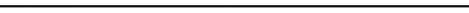

Doris Lessing
Doris Lessing 22 Ekim 1919’da İran, Kirmanşah’ta doğdu. Bugün Zimbabve olarak bilinen Güney Rodezya’daki bir çiftlikte büyüdü. Erken yaşta okulu bırakarak iki evlilik yaptı. (Soyadını ikincisi kocası Gottfried Lessing’den almıştır.) 1949 yılında İngiltere’ye yerleşen Lessing Türkü Söylüyor Otlar’ı (1950) yazarak romancılık kariyerine başladı. 1950’lerde daha sonra Children of Violence (Şiddetin Çocukları) serisini oluşturacak beş roman üzerinde çalıştı. 1962’deki romanı Altın Defter ile uluslararası ilgi gördü. Lessing’in romanları ırksal ve politik meselelerin yanı sıra bir yazar ve kadın olarak anlam arayışını konu alır. Doris Lessing yaşamı boyunca romanlar, çizgi romanlar, librettolar ve makaleler yazmaya devam etti. 2007 yılında Nobel Edebiyat Ödülü’nü aldı. 17 Kasım 2013’te hayatını kaybetti. Doris Lessing’in Türkçeye çevrilmiş eserleri arasında Türkü Söylüyor Otlar (1950), Altın Defter (1962), Evlenmeyen Adamın Hikâyesi (1972), Hayatta Kalma Güncesi (1974), Argos’taki Kanopus Arşivleri Serisi (1979-1983), İçinde Yaşamayı Seçtiğimiz Hapishaneler (1987), Gene Aşk (1996), Mara ile Dann (1999), Kedilere Dair (2002) ve Alfred ile Emily (2008) bulunmaktadır.
Dilek Berilgen Cenkciler
1977 yılında Ankara TED Koleji’ni bitirdi. ODTÜ Elektrik-Elektronik Mühendisliği Bölümü’nde okudu. Yaklaşık 22 yıl TRT’de, çeşitli kademelerde çalışmış olan Cenkciler’in dilimize kazandırdığı kitaplar arasında Mark Mazower’dan Karanlık Kıta: Avrupa’nın Yirminci Yüzyılı, Henry Blount’tan Doğu Akdeniz’e Yolculuk, Nayan Chanda’dan Küreselleşmenin Sıra Dışı Öyküsü, Joseph Stiglitz’den Üç Trilyon Dolarlık Savaş, John Lewis Gaddis’ten Soğuk Savaş: Pazarlıklar, Casuslar, Yalanlar, Gerçek, James Baldwin’den Ne Zaman Gitti Tren, Erik Levi’den Mozart ve Naziler, Virginia Woolf’tan Yıllar sayılabilir.
